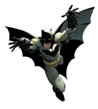

Home Page
Home Page
Hello! My absolute favoite superhero is Batman!
I chose to do Batman because i've enjoyed Batman since I was little. As I got older, I only became more interested. I know more about Batman than any other character. He is one of the longest running, and simply one of the best written, superheros of all time.
This website is dedicated to explaining Batman's backstory, his strengths and weaknesses, his allies, enemies, and some of the most famous media surrounded around him.
This page may contain spoilers for any Batman media whatsoever.
Fun Facts!
Batman was invented in 1939 by Bob Kane and Bill Finger. The first comic he ever appeared in was detective comics no.27. Gotham is based on New Jersey. Batman comics were originally going to be a comical character. Batman's suit was originally going to be red. The caves bruce fell into as a kid later became his Batcave. Originally, Batman did kill villains.

Shameless plug! go play my game I made for this class! Click here to play on Greenfoot!